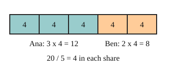

Part of Ratios. Answer in the chat (1: ..., g: c), add sure or guess after any answer, and say done when finished.
Last time: Ana and Ben share 20 sweets in the ratio 3:2. How many does Ana get? You said c) 10. It is b) 12.

3:2 does not mean half each: for every 3 sweets Ana gets, Ben gets 2. So count shares first: 3 + 2 = 5 equal shares (notes 3). One share is 20 / 5 = 4, so Ana gets 3 x 4 = 12 and Ben gets 2 x 4 = 8. They add back to 20, which checks it (notes 4).
Q1. Share 35 in the ratio 4:3.
4 + 3 = 7 shares, 35 / 7 = 5, so 20 and 15 (sure)
Q2. Kai and Lu share 65 stickers in the ratio 4:9. How many does Lu get?
Q3. Sam says sharing 30 in the ratio 2:3 gives 2 and 3. In your own words, what is wrong?
2:3 only says how the parts compare, not how many. 2 and 3 add to 5, not 30. There are 5 equal shares of 6, so it is 12 and 18
A recipe for 4 people uses 300 g of flour. How much flour is needed for 6 people?
d